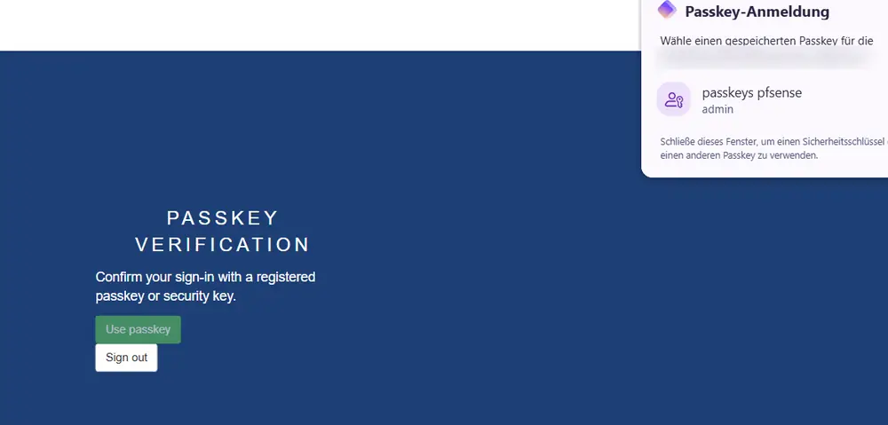
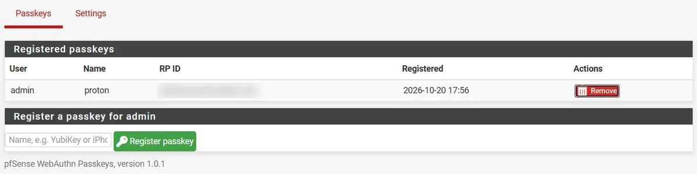

Passkey-Login für pfSense
Ein Add-on, das den Login auf das Web-Interface der pfSense-Firewall mit einem Passkey absichert, als zweiten Faktor nach dem Passwort.
- Kontext
- Privatprojekt, Open Source (Apache 2.0)
- Zeitraum
- Oktober 2026, ein Tag
- Status
- Version 1.0.1, im Einsatz auf meiner Firewall
- Werkzeuge
- PHP, JavaScript, WebAuthn, mit KI als Unterstützung
Ausgangslage
Das Web-Interface meiner pfSense-Firewall erreiche ich über einen Cloudflare Tunnel. Davor sitzt zwar Cloudflare Access, die Firewall selbst fragte aber nur nach einem Passwort. Für den wichtigsten Zugang in meinem ganzen Netz war mir das zu wenig.
pfSense bietet für sein Web-Interface keine Passkeys an, also habe ich sie selbst nachgerüstet. Ich bin kein Applikationsentwickler, darum habe ich den Code zusammen mit KI geschrieben: Ich habe festgelegt, was das Add-on können und welche Sicherheitsregeln es einhalten muss, und das Ergebnis geprüft, getestet und auf meiner eigenen Firewall installiert.
So funktioniert es
- Nach dem normalen Passwort-Login prüft das Add-on auf jeder Seite des Web-Interface, ob die Sitzung schon mit einem Passkey bestätigt wurde. Wenn nicht, erscheint der Passkey-Schritt.
- Passkeys registriert man pro Benutzer unter System > WebAuthn Passkeys. Gespeichert werden sie in der Konfiguration von pfSense selbst und sind damit in jedem pfSense-Backup enthalten.
- Die Signatur wird komplett auf der Firewall geprüft, ohne externen Dienst. Dazu gehört auch ein kleiner eigener Parser für CBOR, das Datenformat von WebAuthn.
- Installieren und Aktualisieren geht mit einem einzigen Befehl, Einstellungen und Passkeys bleiben dabei erhalten.


Schwierigkeiten und Lösungen
Sicher, ohne mich selbst auszusperren
Ein zweiter Faktor auf der Firewall ist nur sinnvoll, wenn man ihn nicht umgehen kann. Gleichzeitig darf ein Fehler nie dazu führen, dass ich selbst nicht mehr auf meine Firewall komme. Beide Ziele ziehen in entgegengesetzte Richtungen.
- Schrittweise einschalten. Der zweite Faktor wird erst erzwungen, wenn ich ihn einschalte, nachdem mindestens zwei Passkeys registriert sind.
- Ein Notzugang. Vertrauenswürdige Netze und die Konsole funktionieren auch, wenn alle Passkeys verloren sind. Verkehr über den Tunnel ist nie ausgenommen.
- Im Zweifel zu. Fehlen Dateien des Add-ons, sperrt das Web-Interface, statt den Passkey-Schritt zu überspringen.
- Updates überstehen. pfSense-Updates ersetzen die Dateien, in die sich das Add-on einhängt. Die Hooks werden deshalb bei jedem Start und alle 5 Minuten automatisch wieder eingesetzt.
- Keine Hintertür. Die Synchronisation für Hochverfügbarkeit (XMLRPC) braucht nur ein Passwort. Über den Tunnel oder einen anderen Proxy wird sie deshalb immer abgelehnt.
- Begrenzte Sitzungen. Eine Bestätigung läuft nach 12 Stunden ab, und wer einen Passkey entfernt, beendet auch die Sitzungen, die damit bestätigt wurden.
Was ich gelernt habe
- Wie WebAuthn funktioniertChallenge, öffentlicher Schlüssel, Signaturzähler, und warum der Hostname entscheidet, welcher Passkey gilt.
- Wie pfSense anmeldetWo sich ein zweiter Schritt sauber einhängen lässt, ohne den Rest zu beschädigen.
- Sicherheit vor BequemlichkeitIm Zweifel lieber gesperrt als ungeschützt, solange es einen geplanten Weg zurück gibt.
- Arbeiten mit KIKI nutzen, um schnell voranzukommen, und dabei jeden Teil selbst prüfen und verstehen.
Code
Der ganze Code mit Installations- und Einrichtungsanleitung ist auf GitHub: web-auth-pfsense